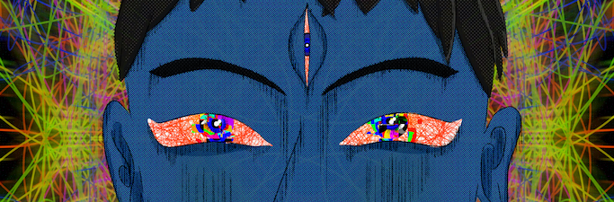
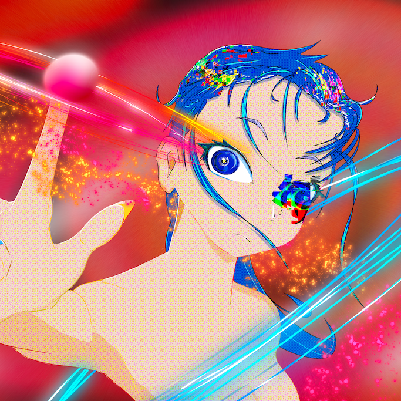
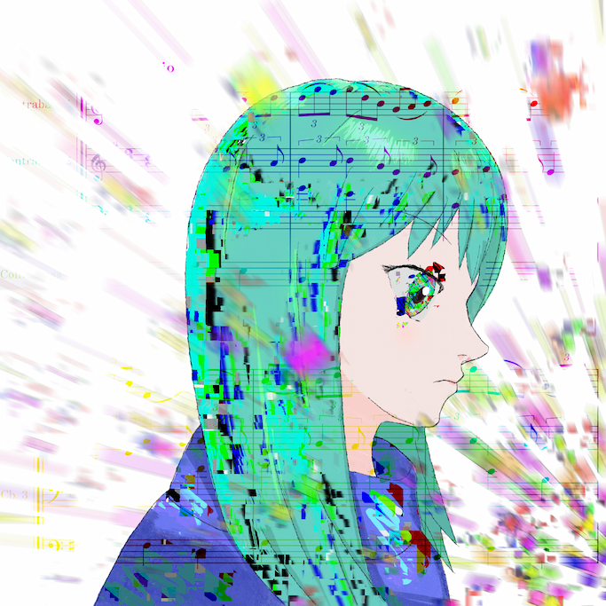
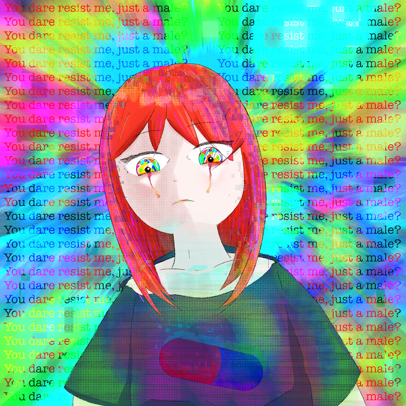
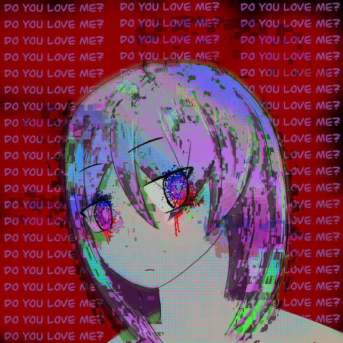
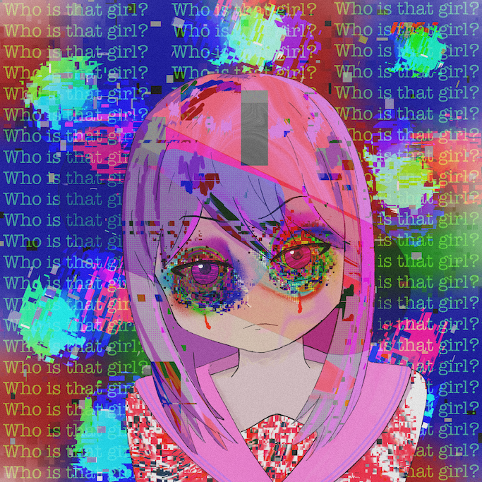
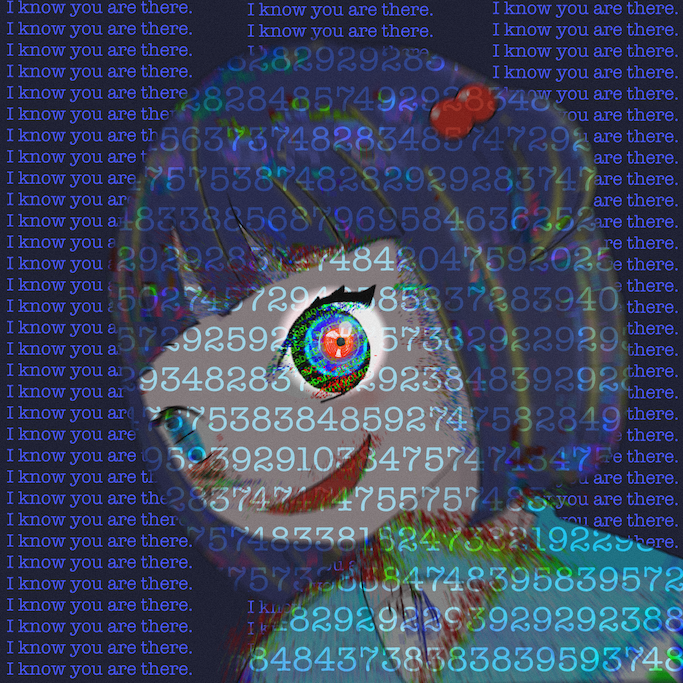
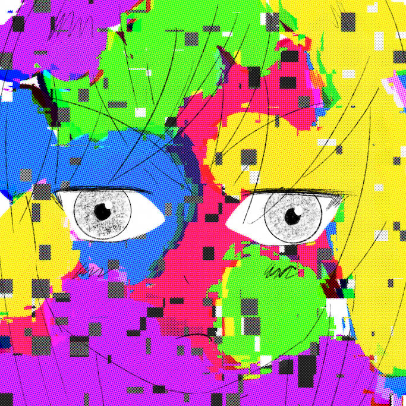

BROKEN REALITY.
Welcome. This is the website of Sena Valentine. Please enjoy your stay.

DATALOGS // ART

MEMORY_CARD_01

MEMORY_CARD_02

MEMORY_CARD_03

MEMORY_CARD_04

MEMORY_CARD_05

MEMORY_CARD_06

MEMORY_CARD_07

MEMORY_CARD_08

MEMORY_CARD_09

LOG_ENTRY: BIO
Sena Valentine is the illustrator who is living in deep digital dimension. Combining Data noise and human mind scream. Then, I catch the inspiration from your corrupted world reverberation.
INITIATE_CONNECTIONESTABLISH_LINK
To access to the system or requesting file transfer, follow the protocol below.